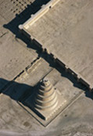
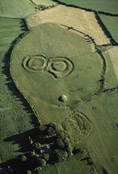
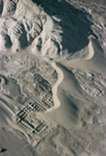
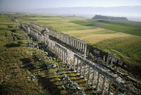
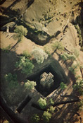

| |
Georg Gerster has flown over archaeological sites in 111 countries to compile a photographic portfolio of epic revelation.
His photographs show how unrelated cultures often had similar ideas and concerns, such as the Nasca Owl Man from Peru,
the Blythe Man in California, and the Cerne Abbas Giant in Dorset.
|
| |
 |
Minaret of the Great Mosque at
Samarra, Iraq
The Great Mosque at Samarra, built soon after AD 847, is believed to be the largest
in the world. Its spiral minaret, the Malwiya, undoubtedly influenced western artists’
representations of the biblical Tower of Babel.
|
| |
|
| |
Hill of Tara, Ireland
The Hill of Tara appears in Irish literature as a royal centre for
the pagan Celts and as Ireland’s mythical and ceremonial capital.
The site has many features which date from the 3rd millennium BC
up to the medieval period.
|
 |
| |
 |
Achaemenid ruins at Dahan-i Ghulaman, Iran
This ruined town was once an administrative centre in the Persian empire, built near
a tributary of the River Helmand. Despite excavations, sand dunes still encroach
onto much of the site.
|
| |
|
| |
Apamea, Syria
The columns of this Roman street (2nd century AD) have been
re-erected over a length of more than 600m. Apamea was captured
by Alexander the Great, but later became a Roman provincial capital.
|
 |
| |
 |
Monolithic church of Beta Giyorgis at Lalibela, Ethiopia
Sitting high in the Ethiopian mountains, the monastic village of Lalibela has twelve
monolithic churches carved from the rock. This cruciform church of the House
of St George was dedicated around 1200 to Ethiopia's national saint.
All images © Georg Gerster / Panos Pictures 2006 |
| |
Georg Gerster was born in Switzerland in 1928 and gained a doctorate from Zurich University. After being science
editor of the Zurich Weltwoche from 1950-6, he became a freelance journalist specialising in science reporting and
aerial photography. He has exhibited in numerous shows and his photographs have been used in many books and
scientific journals. His fame as an aerial photographer has been established by the use of his images in a wide variety
of popular publications, ranging from National Geographic to Swissair posters and calendars. His fascinating and
adventurous career is more fully documented in the book accompanying this exhibition, The Past from Above, edited
by Charlotte Trümpler. |